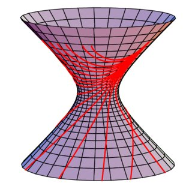

About me

Hi! My name is Shiv Kumar; I graduated from Aston University with a BSc in Mathematics. I work as a software developer and do coding both as a hobby and a career. I started my programming journey with MATLAB from my days studying Algorithms and Numrical Analysis. I joined a coding bootcamp shortly after graduating where I was introduced to Java programming language with object-oriented programming. My first job after graduating from University was as a Systems Developer in a leading law firm where I worked with tools provided by Thompson Reuters such as Contract Express.